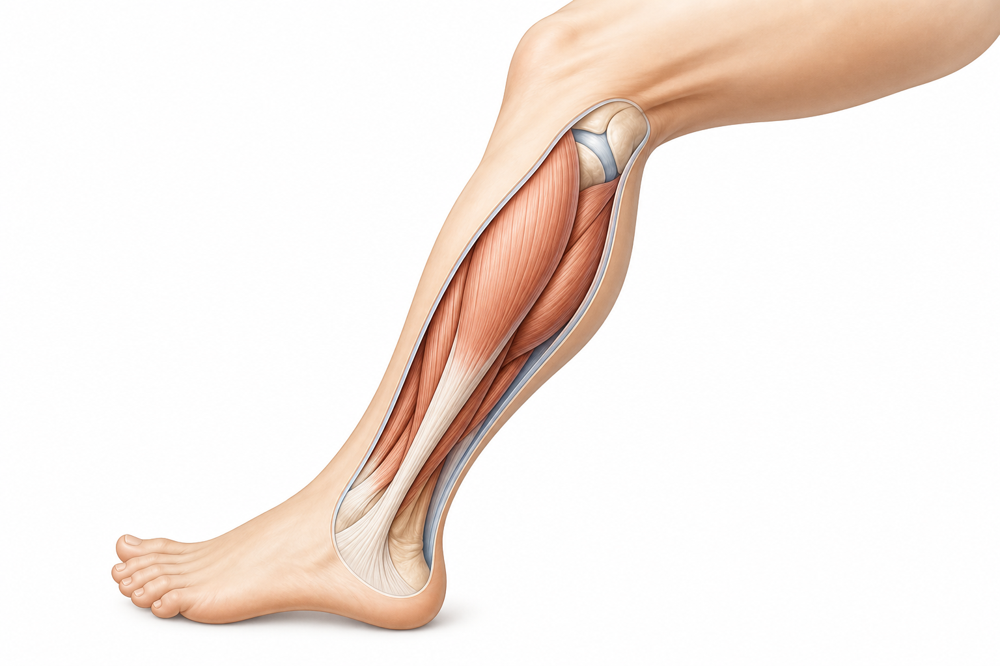
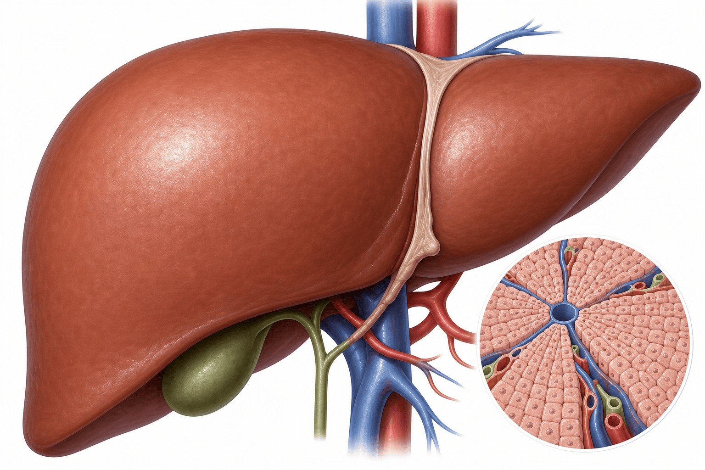
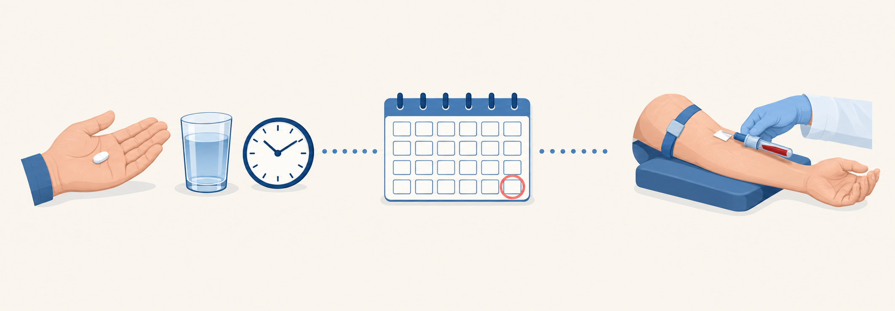
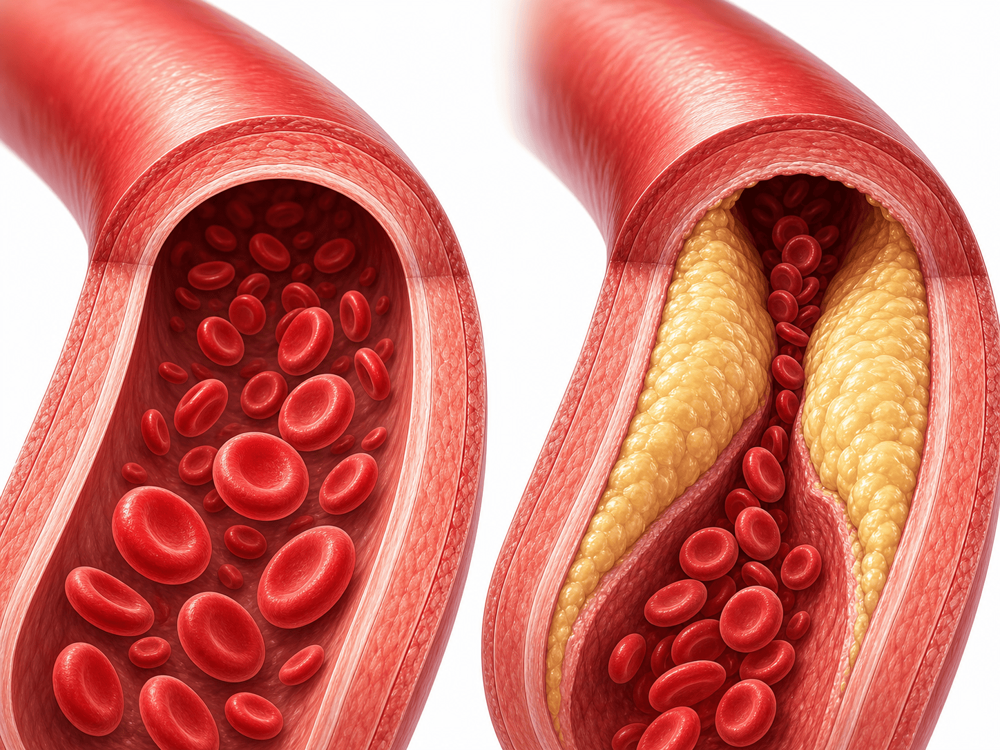

CHAPTER 01 · 한눈에 보기
무엇을 얼마나 걱정해야 하나
별이 많을수록 더 신경 쓸 일입니다 — 진짜 위험은 부작용이 아니라 ‘안 먹는 것’입니다
| 걱정거리 | 걱정할 정도 | 한 줄 요약 |
|---|---|---|
| 근육통 | ★★★★★ | 통증은 진짜지만, 한 시험에서 증상 강도의 약 90%는 가짜약을 먹을 때도 똑같이 나타났습니다(노세보) |
| 근육이 녹는 병(횡문근융해증) | ★★★★★ | 수만 명 중 1명꼴로 아주 드뭅니다. 주로 약물 상호작용·고용량에서 생깁니다 |
| 간 수치 상승 | ★★★★★ | 증상 없는 간 수치 상승은 흔하지만, 의미 있는 간 손상은 매우 드뭅니다 |
| 새로 생기는 당뇨 | ★★★★★ | 상대위험이 약 9% 늘지만, 심근경색·뇌졸중을 막는 이익이 더 큽니다 |
| 약물 상호작용 | ★★★★★ | 일부 스타틴은 특정 약이나 자몽주스와 함께 먹으면 혈중 농도가 오릅니다 |
| 약을 안 먹거나 끊는 것 | ★★★★★ | 가장 중요한 위험 — 심근경색 후 끊으면 1년 사망 위험이 88% 오릅니다 |
Tip · 불편한 점이 있으면 끊기 전에 먼저 말씀해 주세요. 대부분 조정으로 해결됩니다.근거 · EAS 2015 · NLA 2022 · CTT 2022 · Sattar 2010
광교바른내과 · 환자 안내자료 · ⚠️ 교육·참고용 — 치료 결정은 담당 의료진과 상의해 정합니다
02 / 13
CHAPTER 02 · 근육 증상
근육 증상 — 통증은 진짜, 약 때문은 드뭅니다
실제로 느끼는 근육통과, 약을 모르게 비교했을 때의 진짜 차이는 크게 다릅니다
7–29%
실제 진료에서 호소하는 비율일부 연구는 30%까지 보고합니다.
1–5%
가짜약과 비교한 진짜 차이진짜 약 때문인 경우는 약 0.5%입니다.
15건 중
14건
14건
스타틴 탓이 아니었던 근육 증상대부분은 다른 원인을 약 탓으로 오해한 것입니다.
첫 1년
진짜 위험이 몰리는 때약 때문인 초과 위험은 주로 치료 첫 1년에 있습니다.

Tip · 근육통만 있으면 끊지 말고 먼저 연락 주세요. 콜라색 소변이나 소변량 감소가 보이면 바로 응급실로 가세요.근거 · EAS 2015 · NLA 2022 · AHA 2019
광교바른내과 · 환자 안내자료 · ⚠️ 교육·참고용 — 치료 결정은 담당 의료진과 상의해 정합니다
03 / 13
CHAPTER 02 · 노세보 효과
스타틴 탓이라 여긴 근육 증상, 상당 부분은 ‘약 성분’ 때문이 아닙니다
노세보 효과 — 약을 먹는다는 생각만으로도 같은 증상이 생깁니다
90%
스타틴 때문이라 여긴 근육 증상의 강도 가운데 가짜약을 먹을 때도 나타난 몫
증상 점수로 비교한 시험 결과
어떻게 시험했나
한 사람이 진짜 약과 가짜약을 어느 쪽인지 모르는 채 번갈아 먹으며 근육 증상을 기록했습니다.
결과
진짜 약을 먹을 때와 가짜약을 먹을 때의 근육 증상 차이는 통계적으로 의미 없을 만큼 작았습니다.
그 뒤
‘스타틴이 안 맞는다’며 끊었던 분의 약 절반이 이 시험 뒤 다시 복용에 성공했습니다.
Tip · 근육통이 ‘가짜’라는 뜻이 아닙니다. 통증은 진짜이고, 원인이 약 성분이 아닌 경우가 많다는 뜻입니다.근거 · SAMSON 2020 · StatinWISE 2021
광교바른내과 · 환자 안내자료 · ⚠️ 교육·참고용 — 치료 결정은 담당 의료진과 상의해 정합니다
04 / 13
CHAPTER 02 · 대처 순서
근육 증상이 있으면 — 즉시 중단이 아니라 단계적 재평가
근육 증상이 생겼을 때 진료실에서 밟는 네 단계입니다
1
시간 관계 확인
복용을 시작하고 비교적 이른 시기에 생겼는지, 끊으면 나아지는지 봅니다.
2
다른 원인 확인
운동, 갑상선 기능 저하, 비타민D 부족, 함께 먹는 약을 점검합니다.
3
다시 시작해 보기
잠시 쉬었다가 같은 약이나 다른 스타틴을 적은 용량으로, 또는 주 1~3회로 다시 시작합니다.
4
약 바꾸기·더하기
그래도 어려우면 에제티미브나 주사형 약(PCSK9 억제제)을 더합니다.
바로 끊지 마세요대부분 용량 조정이나 약 바꾸기로 다시 잘 드실 수 있습니다. 진료실에서 이 순서로 함께 확인합니다.
Tip · 증상이 언제 시작됐는지, 새로 먹기 시작한 약이 있는지 적어 오시면 도움이 됩니다.근거 · 2018 ACC/AHA 콜레스테롤 지침 · EAS 2015
광교바른내과 · 환자 안내자료 · ⚠️ 교육·참고용 — 치료 결정은 담당 의료진과 상의해 정합니다
05 / 13
CHAPTER 03 · 간 수치
간 수치 — 정기 간검사는 더 이상 필요 없습니다
증상 없는 간 수치 상승은 흔하지만, 의미 있는 간 손상은 매우 드뭅니다

0.5–3%
증상 없는 간 수치 상승주로 첫 3개월에 나타나고, 약 70%는 계속 먹어도 사라집니다.
1/17,000
의미 있는 간 손상1만 7천 명 중 1명꼴로 매우 드뭅니다.
1회
시작 전 간 검사2012년 미국 FDA가 정기 간검사 권고를 없앴습니다. 그 뒤로는 증상이 있을 때만 봅니다.
Tip · 지방간이 있어도 안전하고 오히려 간 수치가 좋아집니다. 활동성 간질환·비대상성 간경변만 금기입니다.근거 · FDA 2012 · Björnsson 2012 · AASLD
광교바른내과 · 환자 안내자료 · ⚠️ 교육·참고용 — 치료 결정은 담당 의료진과 상의해 정합니다
06 / 13
CHAPTER 03 · 검사 시점
간 검사는 시작 전 한 번 — 그다음은 필요할 때만
달력에 정기 간검사 날짜를 적어 둘 필요는 없습니다

① 약은 매일 꾸준히
② 정기 간검사 날짜는 따로 없음
③ 증상이 있을 때만 피검사
Tip · 피곤함이 심하거나 소변 색이 짙어지는 등 몸이 이상하면, 다음 진료를 기다리지 말고 연락 주세요.근거 · FDA 2012 라벨 변경
광교바른내과 · 환자 안내자료 · ⚠️ 교육·참고용 — 치료 결정은 담당 의료진과 상의해 정합니다
07 / 13
CHAPTER 04 · 혈당
당뇨가 약간 늘 수 있지만, 이익이 훨씬 큽니다
새로 생기는 당뇨 — 위험은 작고, 심장·혈관을 지키는 이익은 분명합니다
새로 생길 수 있는 당뇨
위험은 작습니다.
- 상대위험이 약 9% 늘어납니다 — 13개 연구, 9만여 명
- 4년 동안 먹으면 255명당 1명꼴로 당뇨가 더 생깁니다
- 고용량일수록, 당뇨 전단계일수록 조금 더 오릅니다
막아 주는 심근경색·뇌졸중
이익이 훨씬 큽니다.
- 당뇨 고위험군에서 당뇨가 54건 느는 동안
심혈관 사건·사망 134건을 막았습니다 - 당뇨가 생겨도 스타틴의 심혈관 이익은 그대로입니다
- 당뇨 위험 요인이 있으면 혈당도 함께 챙깁니다
Tip · 당뇨 전단계라는 말을 들은 적이 있으면 알려 주세요. 혈당 검사를 함께 챙깁니다.근거 · Sattar 2010 · Preiss 2011 · JUPITER 2012
광교바른내과 · 환자 안내자료 · ⚠️ 교육·참고용 — 치료 결정은 담당 의료진과 상의해 정합니다
08 / 13
CHAPTER 05 · 약물 상호작용
약물 상호작용 — 알면 대부분 안전하게 관리됩니다
스타틴 종류에 따라 영향이 다릅니다 — 새 약을 시작하면 미리 알려 주세요
| 구분 | 내용 |
|---|---|
| 농도가 오르기 쉬운 스타틴 | 심바스타틴 · 로바스타틴 — 아토르바스타틴은 일부만 영향을 받아 덜합니다 |
| 영향이 적은 스타틴 | 로수바스타틴 · 프라바스타틴 · 피타바스타틴 · 플루바스타틴 단, 산디문(사이클로스포린)을 드시면 로수바·피타바스타틴도 제한 — 산디문 안내문 |
| 조심할 음식 | 자몽주스 — 심바스타틴 농도가 3~4배 오릅니다 |
| 조심할 약 | 곰팡이 약(이트라코나졸 등) · 클래리스로마이신 항생제 · 베라파밀 · 딜티아젬 · 사이클로스포린 HIV 약 — 심바·로바스타틴과는 함께 쓰지 않습니다 |
| 비교적 안심 | 항생제는 아지스로마이신 · 중성지방 약은 페노피브레이트 |
| 아시아인 | 로수바스타틴 혈중 농도가 약 2배 — 5mg 저용량부터 시작합니다 |
Tip · 다른 병원에서 새 약을 받으면 ‘스타틴을 먹고 있다’고 꼭 말씀해 주세요.근거 · 2016 AHA 약물상호작용 성명 · FDA 로수바스타틴 라벨(2023)
광교바른내과 · 환자 안내자료 · ⚠️ 교육·참고용 — 치료 결정은 담당 의료진과 상의해 정합니다
09 / 13
CHAPTER 06 · 진짜 위험
진짜 위험은 부작용이 아니라 ‘안 먹는 것’입니다
지금까지는 부작용 이야기였습니다 — 막아 주는 쪽의 숫자를 보세요
21%↓
주요 혈관 사건나쁜 콜레스테롤(LDL)을 약 39 mg/dL 낮추면 약 1/5 줄고, 낮출수록 더 줄어듭니다.
48건↓
이미 관상동맥질환이 있는 분1,000명당 48건을 막아 이익이 가장 큽니다.
88%↑
심근경색 후 끊었을 때1년 사망 위험이 거의 2배가 됩니다.

Tip · 부작용은 대부분 되돌릴 수 있지만, 한번 생긴 심근경색·뇌졸중은 되돌릴 수 없습니다.근거 · CTT 2010 · Daskalopoulou 2008 · 2018 ACC/AHA
광교바른내과 · 환자 안내자료 · ⚠️ 교육·참고용 — 치료 결정은 담당 의료진과 상의해 정합니다
10 / 13
CHAPTER 07 · 오해와 사실
흔한 오해 바로잡기
자주 듣는 걱정 네 가지 — 사실은 이렇습니다
오해 1
“간 수치 때문에 검사를 계속해야 한다”
사실 — 2012년부터 정기 간검사는 필요 없습니다. 시작 전 1회, 그다음은 증상이 있거나 필요할 때만.
오해 2
“당뇨를 일으키니 위험하다”
사실 — 위험은 작고(4년에 255명당 1명), 심혈관 이익이 훨씬 큽니다. 당뇨가 생겨도 이익은 그대로입니다.
오해 3
“지방간이면 스타틴 금지”
사실 — 지방간에서는 오히려 이롭습니다. 활동성 간질환·비대상성 간경변만 금기입니다.
오해 4
“평생 먹어야 하니 부담이다”
사실 — 끊는 위험(심근경색 후 1년 사망 88%↑)이 훨씬 큽니다. 불편하면 끊지 말고 함께 조정합니다.
Tip · 인터넷에서 본 걱정이 있으면 진료 때 그대로 물어봐 주세요.근거 · FDA 2012 · JUPITER 2012 · AASLD · Daskalopoulou 2008
광교바른내과 · 환자 안내자료 · ⚠️ 교육·참고용 — 치료 결정은 담당 의료진과 상의해 정합니다
11 / 13
CHAPTER 08 · 체크리스트
환자분이 기억할 7가지
스타틴을 안전하게, 그리고 끝까지 잘 드시기 위한 실천 항목
- 01근육통·불편함이 있어도 스스로 끊지 말고 먼저 연락 주세요
- 02새 증상이 복용 시작과 시기가 맞는지, 끊으면 나아지는지 함께 봅니다
- 03간·근육 검사는 시작 전 1회, 그리고 증상이 있을 때만
- 04자몽주스·새 항생제·곰팡이 약을 시작하면 미리 알려 주세요
- 05당뇨 위험 요인이 있으면 알려 주세요 — 혈당도 함께 챙깁니다
- 06식사·운동·금연으로 약 효과를 더 키우세요
- 07임의로 끊으면 심근경색·뇌졸중 위험이 커집니다 — 조정은 함께
불편하면 끊지 마시고, 같이 방법을 찾겠습니다
용량을 줄이거나, 다른 스타틴으로 바꾸거나, 다른 약을 더하는 방법이 있습니다.
Tip · 이 장을 사진으로 찍어 두시면 다음 진료 때 확인하기 좋습니다.근거 · 2018 ACC/AHA · KSoLA 2022 이상지질혈증 진료지침
광교바른내과 · 환자 안내자료 · ⚠️ 교육·참고용 — 치료 결정은 담당 의료진과 상의해 정합니다
12 / 13
CLOSING
부작용은 되돌릴 수 있지만, 심근경색은 되돌릴 수 없습니다
불편한 점이 생기면 끊지 마시고 언제든 말씀해 주세요 — 함께 조정하겠습니다
광교바른내과
경기 용인 수지구 광교중앙로 298, 4층 · 031-893-4560
평일 08:30~18:30 · 토요일 08:30~13:30
평일 08:30~18:30 · 토요일 08:30~13:30
이 자료의 성격
부작용 걱정을 근거로 정리한 설명자료입니다. 약 조정은 담당 의사와 상의해 정합니다.
참고한 자료
SAMSON 2020 · StatinWISE 2021 · CTT 2010·2022 · Sattar 2010 · Preiss 2011 · JUPITER 2012 · FDA 2012 · Björnsson 2012 · EAS 2015 · NLA 2022 · 2018 ACC/AHA · KSoLA 2022 · Daskalopoulou 2008
SCAN TO REVISIT
집에서 다시 보기
QR을 스캔하면 핸드폰에서
같은 자료를 다시 볼 수 있어요
같은 자료를 다시 볼 수 있어요
Tip · QR로 다시 보기 · 집에서 볼 확인 일정과 대처표는 스타틴 안내문을 드립니다.근거 · 광교바른내과
광교바른내과 · 환자 안내자료 · ⚠️ 교육·참고용 — 치료 결정은 담당 의료진과 상의해 정합니다
13 / 13